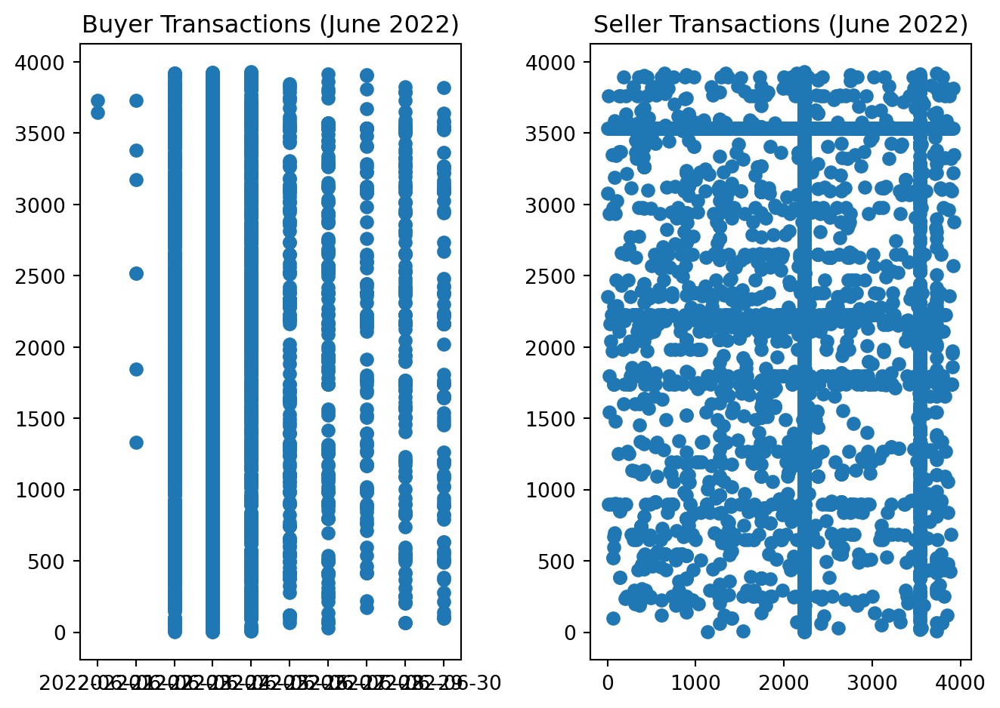
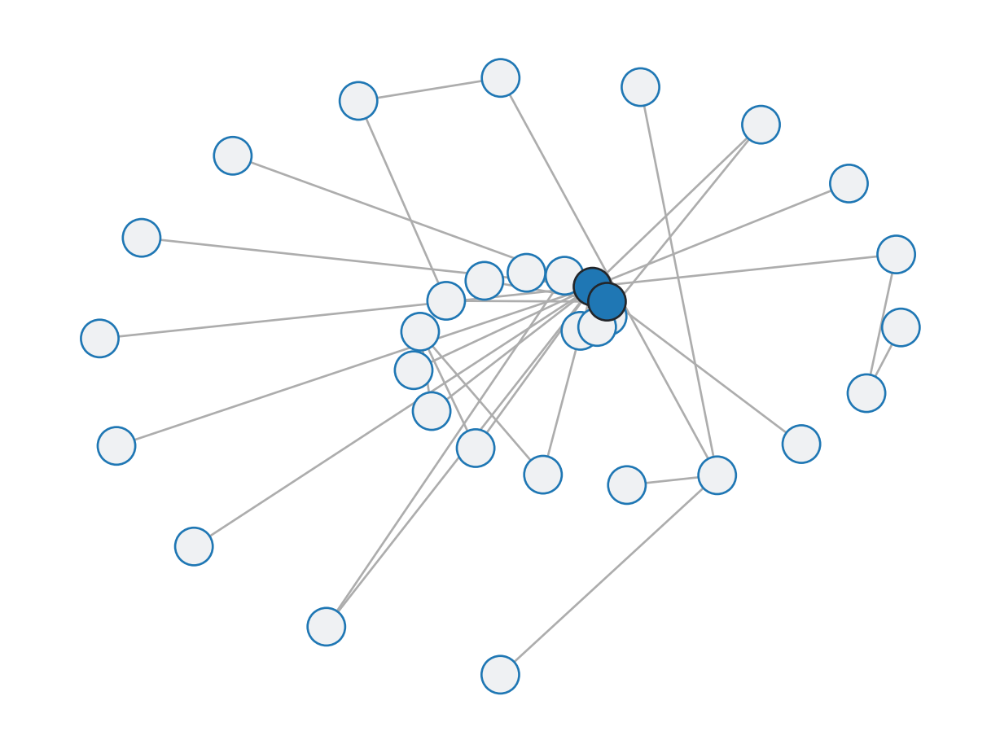
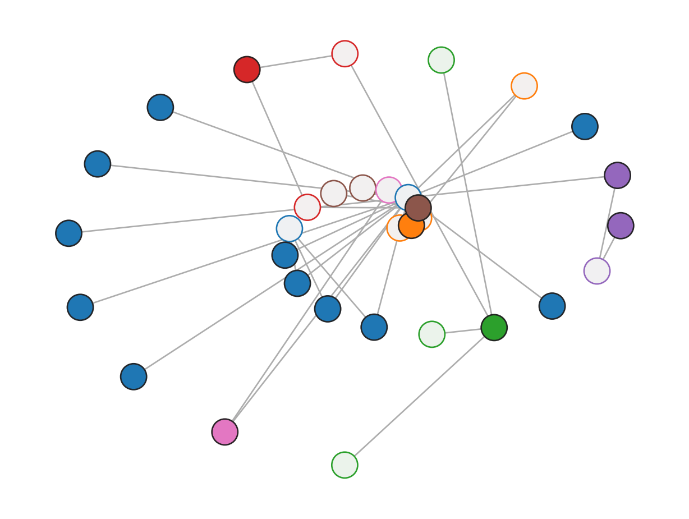
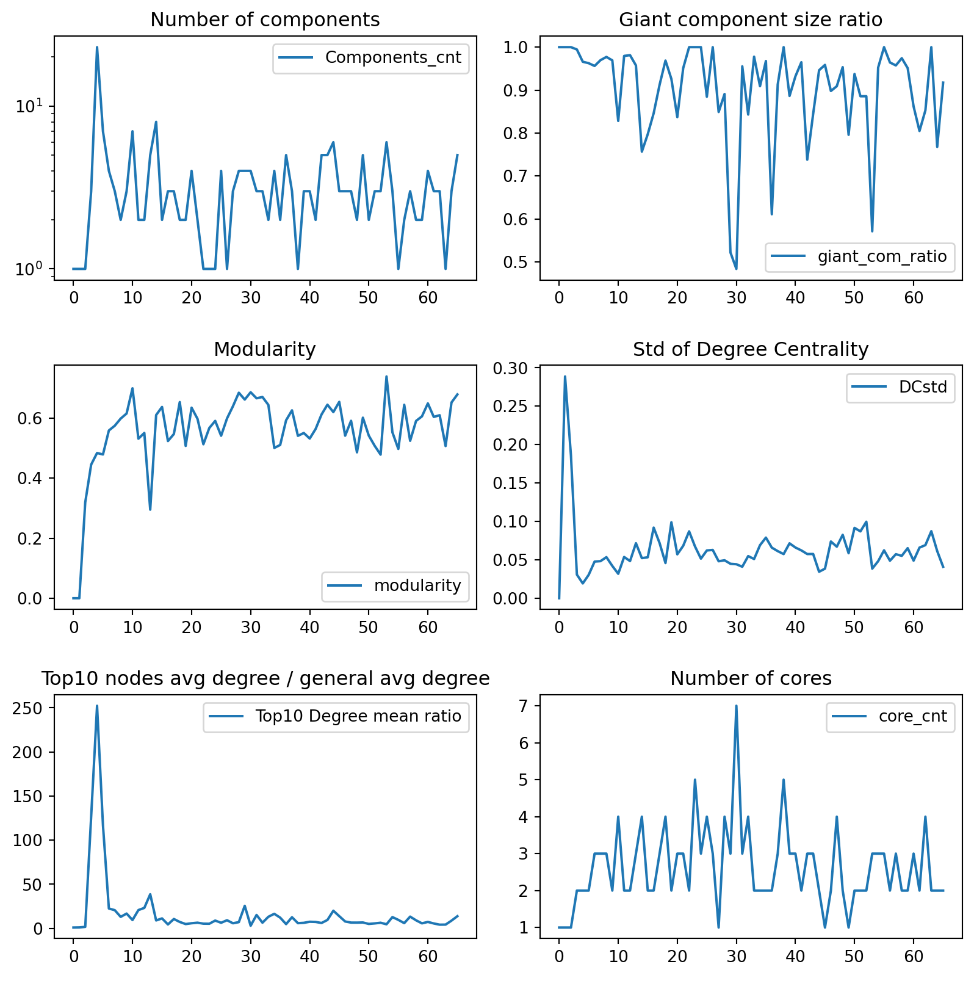

Alex Schaef, Nathaniel Hamilton Thompson, Orin Crouse
Published
Invalid Date
Decentralization of the Cryptocurrency dy/dx on the Ethereum Blockchain
Alex Schaef, Nathaniel Hamilton Thompson, Orin Crouse
Abstract
Cryptocurrency exchanges heavily emphasize being a “decentralized finance,” in that all transactions of cryptocurrencies are made between two individuals without requiring a central intermediary. However, recent studies have expressed doubt about the decentralized nature of cryptocurrency. In this paper, we study the Euler crypto token (in addition to a previous study done over the AAVE token) to conclude that, although there are some centralized components within the network of transactions, trends across multiple tokens still indicate a decentralized nature to the network.
#1 Introduction
Cryptocurrency prides itself on being a truly decentralized finance, meaning transactions can happen between any two individuals, or more, without the need of a central intermediary. In our lives, the best example of an intermediary is a bank. With the U.S. dollar, transactions are normally approved by a bank, meaning most exchanges of money go through a central point; the majority of transactions are between a person and a bank. Cryptocurrency is different in that transactions are made entirely between individuals, with no central intermediary. These transactions are recorded on a blockchain, which is essentially a virtual ledger. Our project is inspired by a previous paper written by Ziqiao Ao, Gergely Horvath, and Luyao Zhang, titled Are Decentralized Finance Really Decentralized? A Social Network Analysis of the AAVE Protocol on the Ethereum Blockchain The paper studies the AAVE token, and attempts to argue that cryptocurrency is not fully decentralized as it claims to be. In this project, we will expand on the studies done in this original paper, with the following goals:
Confirm or deny the results of the original paper.
Use data from dy/dx token to expand on the results of the original paper.
Examine trends between tokens to see if the decentralization of transactions is comparable across different currencies.
Examine trends across time to see if different tokens follow a similar trend over the lifetime of the token.
1.1 General Approach
This notebook take the approach of taking the networks for the Euler token and re-framing the data into simpler, more readable outputs to better explain the idea of the centralization for the tokens. A quote to describe the idea used is
“core-periphery structure in its simplest form refers to a partition of a network into two groups of nodes called core and periphery, where core nodes are densely interconnected (i.e., adjacent), and peripheral nodes are adjacent to the core nodes but not to other peripheral nodes”.[2]
If a token is to be described as being a central network we would see our graphs consist of core nodes, while a decentralized network would consist of periphery nodes.
Core-periphery pairs are defined to have the properties of:
\[
A^*=A^*_{ij}=(x_i+x_j-x_ix_j)\delta(c_i,c_j)
\] We see \(x_i=1\) for core nodes and \(x_i=0\) for peripheral nodes. The index of the core-peripheral pair to which node \(i\) belongs to is represented by \(c_i(1 \leq c_i \leq C)\). The following properties are treated like axioms here.
Every core node is adjacent to every other core node.
Every core node is adjacent to all corresponding peripheral nodes.
Every peripheral node is not adjacent to any other peripheral node.
Lastly, there are no edges between different idealized core-periphery pairs. \([3, 4]\)
When computing you want \(c_i,x_i \in(1 \leq i \leq N)\) not be maximized comparatively between \(A\) and \(A*\). This is shown by: \[Q^{cp}_{config} = \frac{1}{2M} \sum_{i=1}^N\sum_{j=1}^N A_{ij}A_{ij}^* - Ε [\frac{1}{2M} \sum_{i=1}^N \sum_{j=1}^{conf}(1-A_{ij}^*)]\] Using a configuration model where the expected number of edges between nodes \(i\) and \(j\) can be represented by \(Ε[A_{ij}^{conf}]=\frac{d_id_j}{2M}\).
3 Data
In the section titled “Construct Continuous Core-Periphery Structures”, various graphs are formed, each with different algorithms.
3.1 Seeing the token’s raw form of a network for the months of June through August, 3 continuous months.
The libraries used are: matplotlib (verison 3.5.1), scipy, networkx, cpnet, numpy, pandas, os, time, zipfile, tqdm,
community.community_louvain, random, requests, json, and datetime.
11372 Number Transactions for the entire data set
5485 Number Transactions for June

Construction of the continuous core-periphery structure using the Borgatti-Everett Algorithm.

We continue with the Kojaku-Masda Algorithm to see a similar approach, but better given colors….

Average Neighbors to Cores 1.0

##3.? Breakdown
Number of Components: We expect a smaller number of componenets to indicate a more centralized network. The number of components is fairly random with an exception toward the beginning of the recorded data.
Giant Component Size Ratio: A larger giant component size ratio indicates a more centralized network. In our data, the giant component ratio starts high (suggesting more centralization early on), then becomes random, similar to the number of components.
Modulatiry: A smaller modularity score suggests a more centralized network. Modularity for the Ether token starts low, but quickly rises, and stays fairly stable past day 15. This indicates a more centralized network in early days that becomes decentralized and stays decentralized after a couple of weeks. However, while the modularity for Euler settles around 0.6, the modularity for the AAVE token (found in the original paper) settles around 0.8 before dropping down to 0.7, a possible indication that AAVE is more decentralized than Euler.
Standard Deviation of Degree Centrality: A higher standard deviation suggests a more centralized network. Standard deviation for Euler starts high but quickly falls by day five, where is stays steady. Like the modularity scores, this suggests a more centralized network early on that quickly becomes and stays decentralized.
#4 Conclusion
While the prior study on the AAVE token suggested that there was a high level of centralization, our study with the Euler token does not indicate a centralized finance network. However, the tokens have similar trends in decentralization over time. Both tokens begin incredibly centralized, which should not be surprising since most tokens start from one central source. Over a few weeks, all tokens see an increase in the level of decentralization before eventually settling at a point that is certainly decentralized by definition, although both tokens’ networks maintain centralized aspects. This is most visible in the network graphs, where one account has edges linked to a noticeably large number of other accounts. However, the graphs change over time to reflect trends we see in other variables studied (number of components, giant component size ratio, standard deviation of degree centrality, modularity), in that all tokens’ trading networks are centralized when the tokens are created, but become decentralized a short time after trading begins.
Personal takeaways from this project include getting a wider understanding of cryptocurrency trading and decentralized finance, utilizing graph theory to visualize trade networks, using data to study changes over time, and applying mathematical concepts to real world data.
We hope our reults help our sponsor (Chainpulse) better understand the transaction networks they study on the Ethereum blockchain so that they can better develop their own research and analytics of cryptocurrency trading.
#5 Citiations
Ao, Ziqiao, Gergely Horvath, and Luyao Zhang. “Is decentralized finance really decentralized? A social network analysis of the Aave protocol on the Ethereum blockchain.” arXiv preprint arXiv:2206.08401 (2022). [1] Kojaku, Sadamori, and Naoki Masuda. “Core-periphery structure requires something else in the network.” New Journal of physics 20.4 (2018): 043012. [2]
Source Code
---title: "Chain Pulse"author: "Alex Schaef, Nathaniel Hamilton Thompson, Orin Crouse"date: December 15th, 2022format: html: code-fold: true code-tools: trueeditor: visualexecute: echo: false---<h1style="text-align: center;">Decentralization of the Cryptocurrency <br>dy/dx on the Ethereum Blockchain </h1><h2style="text-align: center;">Alex Schaef, Nathaniel Hamilton Thompson, Orin Crouse</h2><h3style="text-align: center;"># Abstract</h3>Cryptocurrency exchanges heavily emphasize being a “decentralized finance,” in that all transactions of cryptocurrencies are made between two individuals without requiring a central intermediary. However, recent studies have expressed doubt about the decentralized nature of cryptocurrency. In this paper, we study the Euler crypto token (in addition to a previous study done over the AAVE token) to conclude that, although there are some centralized components within the network of transactions, trends across multiple tokens still indicate a decentralized nature to the network.#1 IntroductionCryptocurrency prides itself on being a truly decentralized finance, meaning transactions can happen between any two individuals, or more, without the need of a central intermediary. In our lives, the best example of an intermediary is a bank. With the U.S. dollar, transactions are normally approved by a bank, meaning most exchanges of money go through a central point; the majority of transactions are between a person and a bank. Cryptocurrency is different in that transactions are made entirely between individuals, with no central intermediary. These transactions are recorded on a blockchain, which is essentially a virtual ledger. Our project is inspired by a previous paper written by Ziqiao Ao, Gergely Horvath, and Luyao Zhang, titled Are Decentralized Finance Really Decentralized? A Social Network Analysis of the AAVE Protocol on the Ethereum Blockchain The paper studies the AAVE token, and attempts to argue that cryptocurrency is not fully decentralized as it claims to be. In this project, we will expand on the studies done in this original paper, with the following goals:<ul><li>Confirm or deny the results of the original paper.<li><li>Use data from dy/dx token to expand on the results of the original paper.<li><li>Examine trends between tokens to see if the decentralization of transactions is comparable across different currencies.<li><li>Examine trends across time to see if different tokens follow a similar trend over the lifetime of the token.</ul>## 1.1 General ApproachThis notebook take the approach of taking the networks for the Euler token and re-framing the data into simpler, more readable outputs to better explain the idea of the centralization for the tokens. A quote to describe the idea used is"core-periphery structure in its simplest form refers to a partition of a network into two groups of nodes called core and periphery, where core nodes are densely interconnected (i.e., adjacent), and peripheral nodes are adjacent to the core nodes but not to other peripheral nodes".[2]If a token is to be described as being a central network we would see our graphs consist of core nodes, while a decentralized network would consist of periphery nodes.Core-periphery pairs are defined to have the properties of:$$A^*=A^*_{ij}=(x_i+x_j-x_ix_j)\delta(c_i,c_j)$$We see $x_i=1$ for core nodes and $x_i=0$ for peripheral nodes. The index of the core-peripheral pair to which node $i$ belongs to is represented by $c_i(1 \leq c_i \leq C)$. The following properties are treated like axioms here.<ol><li> Every core node is adjacent to every other core node.</li><li>Every core node is adjacent to all corresponding peripheral nodes.</li><li>Every peripheral node is not adjacent to any other peripheral node.</li><li>Lastly, there are no edges between different idealized core-periphery pairs. $[3, 4]$</li></ol>When computing you want $c_i,x_i \in(1 \leq i \leq N)$ not be maximized comparatively between $A$ and $A*$. This is shown by:$$Q^{cp}_{config} = \frac{1}{2M} \sum_{i=1}^N\sum_{j=1}^N A_{ij}A_{ij}^* - Ε [\frac{1}{2M} \sum_{i=1}^N \sum_{j=1}^{conf}(1-A_{ij}^*)]$$Using a configuration model where the expected number of edges between nodes $i$ and $j$ can be represented by $Ε[A_{ij}^{conf}]=\frac{d_id_j}{2M}$.# 3 DataIn the section titled "Construct Continuous Core-Periphery Structures", various graphs are formed, each with different algorithms.## 3.1 Seeing the token's raw form of a network for the months of June through August, 3 continuous months.```{python setup, include = FALSE}#!pip install matplotlib==3.5.1 &> /dev/null#!pip install --upgrade scipy networkx &> /dev/null#!pip install cpnet &> /dev/nullimport cpnetimport networkx as nximport numpy as npimport matplotlib.pyplot as pltimport pandas as pdimport osimport timeimport zipfilefrom tqdm import tqdmimport community.community_louvain as communityfrom numpy import*import randomimport requestsimport jsonimport datetimeprint("The libraries used are: matplotlib (verison 3.5.1), scipy, networkx, cpnet, numpy, pandas, os, time, zipfile, tqdm,")print("community.community_louvain, random, requests, json, and datetime.")url ='https://raw.githubusercontent.com/nghthompson/Math_Clinic_Project/main/Euler%20Crypto%20Data.csv'edf = pd.read_csv(url)# @title Refinement of Data#Number Wallet IDs for simplificationunique_addresses =set(edf['from_address'].unique()) |set(edf['to_address'].unique())mapping = {address: n for n, address inenumerate(unique_addresses)}edf[['from_ID', 'to_ID']] = edf[['from_address', 'to_address']].replace(mapping)# edit timestamp to sort by daysedf.rename(columns={'f0_':'value'}, inplace =True)edf = edf.dropna()edf['value'] = edf['value'].apply(lambda x: float(x))edf['timestamp'] = pd.to_datetime(edf['block_timestamp'])edf['timestamp'] = edf['timestamp'].apply(lambda x: str(x)[:10])edf['timestamp'] = pd.to_datetime(edf['timestamp'])# breakdown dataframe into weeks and monthsall_time = edfjune = edf[(edf.timestamp >='2022-06-01') & (edf.timestamp <='2022-06-30')]july = edf[(edf.timestamp >='2022-07-01') & (edf.timestamp <='2022-07-31')]august = edf[(edf.timestamp >='2022-08-01') & (edf.timestamp <='2022-08-31')]week1 = edf[(edf.timestamp >='2022-06-19') & (edf.timestamp <='2022-06-25')]week2 = edf[(edf.timestamp >='2022-06-26') & (edf.timestamp <='2022-07-02')]week3 = edf[(edf.timestamp >='2022-07-03') & (edf.timestamp <='2022-07-09')]week4 = edf[(edf.timestamp >='2022-07-10') & (edf.timestamp <='2022-07-16')]week5 = edf[(edf.timestamp >='2022-07-17') & (edf.timestamp <='2022-07-23')]week6 = edf[(edf.timestamp >='2022-07-24') & (edf.timestamp <='2022-07-30')]week7 = edf[(edf.timestamp >='2022-07-31') & (edf.timestamp <='2022-08-06')]week8 = edf[(edf.timestamp >='2022-08-07') & (edf.timestamp <='2022-08-13')]week9 = edf[(edf.timestamp >='2022-08-14') & (edf.timestamp <='2022-08-20')]week10 = edf[(edf.timestamp >='2022-08-21') & (edf.timestamp <='2022-08-27')]all_time_g = nx.from_pandas_edgelist(edf, source='from_ID', target='to_ID', edge_attr='value')june_g = nx.from_pandas_edgelist(june, source='from_ID', target='to_ID', edge_attr='value')july_g = nx.from_pandas_edgelist(july, source='from_ID', target='to_ID', edge_attr='value')august_g = nx.from_pandas_edgelist(august, source='from_ID', target='to_ID', edge_attr='value')week1_g = nx.from_pandas_edgelist(week1, source='from_ID', target='to_ID', edge_attr='value')week2_g = nx.from_pandas_edgelist(week2, source='from_ID', target='to_ID', edge_attr='value')week3_g = nx.from_pandas_edgelist(week3, source='from_ID', target='to_ID', edge_attr='value')week4_g = nx.from_pandas_edgelist(week4, source='from_ID', target='to_ID', edge_attr='value')week5_g = nx.from_pandas_edgelist(week5, source='from_ID', target='to_ID', edge_attr='value')week6_g = nx.from_pandas_edgelist(week6, source='from_ID', target='to_ID', edge_attr='value')week7_g = nx.from_pandas_edgelist(week7, source='from_ID', target='to_ID', edge_attr='value')week8_g = nx.from_pandas_edgelist(week8, source='from_ID', target='to_ID', edge_attr='value')week9_g = nx.from_pandas_edgelist(week9, source='from_ID', target='to_ID', edge_attr='value')week10_g = nx.from_pandas_edgelist(week10, source='from_ID', target='to_ID', edge_attr='value')``````{python}all_comm = nx.community.label_propagation_communities(all_time_g)community_index = {n: i for i, com inenumerate(all_comm) for n in com}plt.figure(figsize=(10, 10))plt.title('Network Graph'.format(len(all_time.index)))all_color = [community_index[n] for n in all_time_g]print(len(all_time.index), 'Number Transactions for the entire data set')nx.draw(all_time_g, with_labels=False, node_size=13, node_color=all_color)``````{python}june_comm = nx.community.label_propagation_communities(june_g)community_index = {n: i for i, com inenumerate(june_comm) for n in com}plt.figure(figsize=(10 , 10))plt.title('{:} Euler Transactions (June 2022)'.format(len(june.index)))june_color = [community_index[n] for n in june_g]print(len(june.index), 'Number Transactions for June')nx.draw(june_g, with_labels=False, node_size=5, node_color=june_color)``````{python}plt.subplot(1,2,1)plt.scatter(june['timestamp'], june['to_ID'])plt.title('Buyer Transactions (June 2022)'.format(len(june.index)))plt.subplot(1,2,2)plt.scatter(june['from_ID'], june['to_ID'])plt.title('Seller Transactions (June 2022)'.format(len(june.index)))plt.tight_layout()``````{python}#title Sorting and Defining Core-Periphery Structureedf.sort_values('block_timestamp', ascending =True)# data cleaningedf = edf[edf['timestamp']>='2021-12-30']edf = edf[edf['timestamp']<='2022-08-24']edf.to_csv('Euler Raw Transfer Data.csv')edf = edf.drop(columns = ['token_address','block_timestamp'])## add values between the 2 same addresses togetheredf[['from_address', 'to_address']] = np.sort(edf[['from_address', 'to_address']], axis=1)edf= edf.groupby(['timestamp','from_address','to_address']).agg(lambda x: sum(x)).reset_index()edf.to_csv('Euler transaction data_after preprocessing.csv')edf = pd.read_csv('Euler transaction data_after preprocessing.csv')##Network Analysisedf_time_partition= edf.groupby(['timestamp'])['to_address'].agg(['nunique']).reset_index()edf_time_partition = edf_time_partition.drop(['nunique'], axis=1)##Number of daily edgesnum_nodes = []num_edges = []for i inrange(0,len(edf_time_partition)):# Data Partition edf_1 = edf.loc[edf['timestamp']==edf_time_partition['timestamp'][i]]# MultiDi Network Building (weighted-directed graph) G = nx.from_pandas_edgelist(edf_1, 'from_address', 'to_address', 'value', nx.Graph())# Calculation of Number of nodes, number of edges nodes = G.number_of_nodes() edges = G.number_of_edges() num_nodes.append(nodes) num_edges.append(edges) Network_Features={"num_nodes" : num_nodes,"num_edges" : num_edges}Network_Features=pd.DataFrame(Network_Features)Network_Features['time'] = edf_time_partition['timestamp']### Degree SettingDegreemean = []Degreestd = []for i inrange(0,len(edf_time_partition)):# Data Partition edf_1 = edf.loc[edf['timestamp']==edf_time_partition['timestamp'][i]]#edf_1 = actsenrec.loc[actsenrec['timestamp']==edf_time_partition['timestamp'][i]]# MultiDi Network Building (weighted-directed graph) G = nx.from_pandas_edgelist(edf_1, 'from_address', 'to_address', 'value', nx.Graph())# Calculation of Degree_centrality, mean_value degrees = G.degree() degree =list(dict(G.degree()).values()) edf_deg = {"Degree" : degree} edf_deg = pd.DataFrame(edf_deg) DC_mean = edf_deg['Degree'].mean() DC_std = edf_deg['Degree'].std() Degreemean.append(DC_mean) Degreestd.append(DC_std)Network_Features['Degree mean'] = DegreemeanNetwork_Features['Degree std'] = Degreestd##Extract Top 10 by ratiotop10Degreemean = []top10Degreestd = []for i inrange(0,len(edf_time_partition)): edf_1 = edf.loc[edf['timestamp']==edf_time_partition['timestamp'][i]] sender_mdegree= edf_1.groupby(['from_address'])['to_address'].count().reset_index() receiver_mdegree = edf_1.groupby(['to_address'])['from_address'].count().reset_index() sender_mdegree = sender_mdegree.rename(columns={'to_address':'degree'}) sender_mdegree = sender_mdegree.rename(columns={'from_address':'address'}) receiver_mdegree = receiver_mdegree.rename(columns = {'from_address':'degree'}) receiver_mdegree = receiver_mdegree.rename(columns = {'to_address':'address'}) merge = pd.merge(sender_mdegree,receiver_mdegree,on="address",how ="outer") merge = merge.fillna(int(0)) merge['degree'] = merge['degree_x']+merge['degree_y'] merge.sort_values(by=['degree'], ascending=False, inplace=True) merge = merge.reset_index() top5degree = merge['address'][0:10].tolist() sen_top = edf_1[edf_1['from_address'].isin(top5degree)] rec_top= edf_1[edf_1['to_address'].isin(top5degree)] topaddress = pd.concat([sen_top,rec_top]).drop_duplicates() G = nx.from_pandas_edgelist(topaddress, 'from_address', 'to_address', 'value', nx.Graph())# Calculation of absolute degree degree = []for j inrange (0,2): ## MUST CHANGE BACK TO (0,10) LATER. FIND OUT WHY top5degree IS ONLY THREE VARIABLES degrees = G.degree(top5degree[j]) degree.append(degrees) edf_deg = {"Degree" : degree} edf_deg = pd.DataFrame(edf_deg) deg_mean = edf_deg['Degree'].mean() deg_std = edf_deg['Degree'].std() top10Degreemean.append(deg_mean) top10Degreestd.append(deg_std)Network_Features['Top10Degree mean'] = top10DegreemeanNetwork_Features['Top10Degree std'] = top10DegreestdNetwork_Features['Top10 Degree mean ratio'] = Network_Features['Top10Degree mean']/Network_Features['Degree mean']#The above code cells don't show much being there aren't 10 degrees found, but rather only two.#That means there are only two core nodes that reach the criteria to be considered core.#Already we see the Euler token to be more decentralized rather than central.### Degree centralityDCmean = []DCstd = []for i inrange(0,len(edf_time_partition)):# Data Partition edf_1 = edf.loc[edf['timestamp']==edf_time_partition['timestamp'][i]]#edf_1 = actsenrec.loc[actsenrec['timestamp']==edf_time_partition['timestamp'][i]]# MultiDi Network Building (weighted-directed graph) G = nx.from_pandas_edgelist(edf_1, 'from_address', 'to_address', 'value', nx.Graph())# Calculation of Degree_centrality, mean_value deg_cen = nx.degree_centrality(G) edf_deg = pd.DataFrame.from_dict(deg_cen, orient='index', columns=['Degree_Centrality']) DC_mean = edf_deg['Degree_Centrality'].mean() DC_std = edf_deg['Degree_Centrality'].std() DCmean.append(DC_mean) DCstd.append(DC_std)#The above code cell redefines the core nodes found to double check and ensure the understanding of core is reached for the entire network.### Coefficient Clustersclustermean = []clusterstd = []for i inrange(0,len(edf_time_partition)):# Data Partition edf_1 = edf.loc[edf['timestamp']==edf_time_partition['timestamp'][i]]#edf_1 = actsenrec.loc[actsenrec['timestamp']==edf_time_partition['timestamp'][i]]# Unweighted-Directed Network Building (weighted-directed graph) G = nx.from_pandas_edgelist(edf_1, 'from_address', 'to_address', 'value', nx.Graph())# Calculation of Clustering_Coefficient, mean_value, std clustering = nx.clustering(G) df_cluster = pd.DataFrame.from_dict(clustering, orient='index', columns=['Clustering_Coefficient']) cluster_mean = df_cluster['Clustering_Coefficient'].mean() cluster_std = df_cluster['Clustering_Coefficient'].std() clustermean.append(cluster_mean) clusterstd.append(cluster_std)#The above code cell is form the cluster by coefficient. This is for both core and periphery### Build Modularitymod_list = []for i inrange(0,len(edf_time_partition)):# Data Partition edf_1 = edf.loc[edf['timestamp']==edf_time_partition['timestamp'][i]]#edf_1 = actsenrec.loc[actsenrec['timestamp']==edf_time_partition['timestamp'][i]]# unweighted-undirected Network Building (weighted-directed graph) G = nx.from_pandas_edgelist(edf_1, 'from_address', 'to_address', 'value', nx.Graph())# Calculation of modularity part = community.best_partition(G) mod = community.modularity(part,G) mod_list.append(mod)### Build Transitivity tran_list = []for i inrange(0,len(edf_time_partition)):# Data Partition edf_1 = edf.loc[edf['timestamp']==edf_time_partition['timestamp'][i]]#edf_1 = actsenrec.loc[actsenrec['timestamp']==edf_time_partition['timestamp'][i]]# Unweighted-undirected Network Building (weighted-directed graph) G = nx.from_pandas_edgelist(edf_1, 'from_address', 'to_address', 'value', nx.Graph())# Calculation of transitivity, tran = nx.transitivity(G) tran_list.append(tran)### Centrality by Eigenvectoreigmean = []eigstd = []for i inrange(0,len(edf_time_partition)):# Data Partition edf_1 = edf.loc[edf['timestamp']==edf_time_partition['timestamp'][i]]#edf_1 = actsenrec.loc[actsenrec['timestamp']==edf_time_partition['timestamp'][i]]# MultiDi Network Building (weighted-directed graph) G = nx.from_pandas_edgelist(edf_1, 'from_address', 'to_address', 'value', nx.Graph())# Calculation of Closeness_centrality, mean_value eig_cen = nx.eigenvector_centrality(G, max_iter=20000) edf_eig = pd.DataFrame.from_dict(eig_cen, orient='index', columns=['eigenvector_centrality']) eig_mean = edf_eig['eigenvector_centrality'].mean() eig_std = edf_eig['eigenvector_centrality'].std() eigmean.append(eig_mean) eigstd.append(eig_std)### Core Countcore_cnt = []for i inrange(0,len(edf_time_partition)): edf_1 = edf.loc[edf['timestamp']==edf_time_partition['timestamp'][i]] G = nx.from_pandas_edgelist(edf_1, 'from_address', 'to_address', 'value', nx.Graph()) alg = cpnet.BE() alg.detect(G) c = alg.get_pair_id() x = alg.get_coreness() coredf = pd.DataFrame.from_dict(x, orient='index',columns=['coreness']) core = coredf[coredf['coreness']==1].index.tolist() cnt =len(core) core_cnt.append(cnt)### Closeness CentralityCCmean = []CCstd = []for i inrange(0,len(edf_time_partition)):# Data Partition edf_1 = edf.loc[edf['timestamp']==edf_time_partition['timestamp'][i]]# MultiDi Network Building (weighted-directed graph) G = nx.from_pandas_edgelist(edf_1, 'from_address', 'to_address', 'value', nx.Graph())# Calculation of Closeness_centrality, mean_value close_cen = nx.closeness_centrality(G) edf_close = pd.DataFrame.from_dict(close_cen, orient='index', columns=['Closeness_Centrality']) CC_mean = edf_close['Closeness_Centrality'].mean() CC_std = edf_close['Closeness_Centrality'].std() CCmean.append(CC_mean) CCstd.append(CC_std)### Number of componentscomponents_cnt = []for i inrange(0,len(edf_time_partition)): edf_1 = edf.loc[edf['timestamp']==edf_time_partition['timestamp'][i]] G = nx.from_pandas_edgelist(edf_1, 'from_address', 'to_address', 'value', nx.Graph()) com_cnt = nx.number_connected_components(G) components_cnt.append(com_cnt)### Gaint component by size and number of nodesgiant_com_ratio = []for i inrange(0,len(edf_time_partition)): edf_1 = edf.loc[edf['timestamp']==edf_time_partition['timestamp'][i]] G = nx.from_pandas_edgelist(edf_1, 'from_address', 'to_address', 'value', nx.Graph())# G = nx.Graph() Gcc =sorted(nx.connected_components(G), key=len, reverse=True) G0 = G.subgraph(Gcc[0])#com_cnt = nx.number_connected_components(G)#components_cnt.append(com_cnt) nodes = G0.number_of_nodes() nodes_whole = G.number_of_nodes() ratio = nodes/nodes_whole giant_com_ratio.append(ratio)### Save features outputNetwork_Features['DCmean']=DCmeanNetwork_Features['DCstd']=DCstdNetwork_Features['clustermean']=clustermeanNetwork_Features['clusterstd']=clusterstdNetwork_Features['modularity']=mod_listNetwork_Features['transitivity']=tran_listNetwork_Features['eig_mean']=eigmeanNetwork_Features['eig_std']=eigstdNetwork_Features['closenessmean']=CCmeanNetwork_Features['closenessstd']=CCstdNetwork_Features['Components_cnt']=components_cntNetwork_Features['giant_com_ratio']=giant_com_ratioNetwork_Features['core_cnt']=core_cntNetwork_Features['top10Degreemean']=top10DegreemeanNetwork_Features['top10Degreestd']=top10DegreestdNetwork_Features['core_cnt']=core_cntNetwork_Features['token'] ='Euler'#Network_FeaturesNetwork_Features.to_csv('Euler_Network_Features.csv')```Construction of the continuous core-periphery structure using the Borgatti-Everett Algorithm. ```{python}#title Borgatti-Everett Algorithmedf_1 = edf.loc[edf['timestamp']==edf_time_partition['timestamp'][63]]G = nx.from_pandas_edgelist(edf_1, 'from_address', 'to_address', 'value', nx.Graph())alg = cpnet.BE()alg.detect(G)c = alg.get_pair_id()x = alg.get_coreness() # Get the coreness of nodes##coreness = pd.DataFrame.from_dict(x, orient='index', columns=['Coreness'])##corenessmean = coreness['Coreness'].mean()#corenessmean#sig_c, sig_x, significant, p_values = cpnet.qstest(# c, x, G, alg, significance_level=0.05, num_of_rand_net=100, num_of_thread=16)#print(significant)#print(p_values)pos = nx.spiral_layout(G,scale =1)fig = plt.figure(figsize=(8, 6))ax = plt.gca()ax, pos = cpnet.draw(G, c, x, ax, pos = pos)edf_2 = edf_1[['from_address', 'to_address', 'value']]#edf_2.tail()result = edf_2.dtypes#print(result)seller = edf_2.from_address.unique()buyer = edf_2.to_address.unique()```We continue with the Kojaku-Masda Algorithm to see a similar approach, but better given colors....```{python}kmconfig = cpnet.KM_config()kmconfig.detect(G)pos = nx.spiral_layout(G,scale =1)c = kmconfig.get_pair_id()x = kmconfig.get_coreness()fig = plt.figure(figsize=(8, 6))ax = plt.gca()ax, _ = cpnet.draw(G, c, x, ax, pos = pos)``````{python}#Conform Core Addresses by Date Countscore_address = []a =0for i inrange(0,len(edf_time_partition)): edf_1 = edf.loc[edf['timestamp']==edf_time_partition['timestamp'][i]] G = nx.from_pandas_edgelist(edf_1, 'from_address', 'to_address', 'value', nx.Graph()) alg = cpnet.BE() alg.detect(G) c = alg.get_pair_id() x = alg.get_coreness() coredf = pd.DataFrame.from_dict(x, orient='index',columns=['coreness']) core = coredf[coredf['coreness']==1].index.tolist() core_address.extend(core) a+=1#print(a)cores = pd.DataFrame(core_address)core_cnt = cores[0].value_counts(ascending=False).reset_index()#core_cntcore_cnt.to_csv('core_date_cnt.csv')#Number of Core Members Each Daycore_cnt = []for i inrange(0,len(edf_time_partition)): edf_1 = edf.loc[edf['timestamp']==edf_time_partition['timestamp'][i]] G = nx.from_pandas_edgelist(edf_1, 'from_address', 'to_address', 'value', nx.Graph()) alg = cpnet.BE() alg.detect(G) c = alg.get_pair_id() x = alg.get_coreness() coredf = pd.DataFrame.from_dict(x, orient='index',columns=['coreness']) core = coredf[coredf['coreness']==1].index.tolist() cnt =len(core) core_cnt.append(cnt)#Average Number of Neighbors of Coresavg_core_neighbor = []for i inrange(0,len(edf_time_partition)): edf_1 = edf.loc[edf['timestamp']==edf_time_partition['timestamp'][0]] G = nx.from_pandas_edgelist(edf_1, 'from_address', 'to_address', 'value', nx.Graph()) alg = cpnet.BE() alg.detect(G) c = alg.get_pair_id() x = alg.get_coreness()coredf = pd.DataFrame.from_dict(x, orient='index',columns=['coreness'])core = coredf[coredf['coreness']==1].index.tolist()neighbor_cnt = []for i inrange (0,len(core)): neighbor = G.degree(core[i]) neighbor_cnt.append(neighbor)neighbor_cnt_mean = mean(neighbor_cnt)avg_core_neighbor.append(neighbor_cnt_mean)print("Average Neighbors to Cores", np.sum(neighbor_cnt_mean))#Network Dynamics NEED TO FILL IN THE REMAINING, last graphedf_2 = pd.read_csv('Euler_Network_Features.csv')fig,axes = plt.subplots(3,2)plt.style.use('default')#plt.style.use('seaborn-pastel')ax = edf_2[['Components_cnt']].plot(ax = axes[0,0], figsize=(10,10), grid=False, title='Number of components',xlabel=' ')ax.set_yscale('log')edf_2[['giant_com_ratio']].plot(ax = axes[0,1], figsize=(10,10), grid=False, title='Giant component size ratio',xlabel=' ')edf_2[['modularity']].plot(ax = axes[1,0], figsize=(10,10), grid=False, title='Modularity',xlabel=' ')#edf_2[['relative_degree']].plot(ax = axes[1,0], figsize=(13,10), grid=False, title='Relative degree',xlabel=' ')edf_2[['DCstd']].plot(ax = axes[1,1], figsize=(10,10), grid=False, title='Std of Degree Centrality',xlabel=' ')#edf_2[['cp_test_pvalue']].plot(ax = axes[2,0], figsize=(13,11), grid=False, title='p-value of cp test',xlabel=' ')edf_2[['Top10 Degree mean ratio']].plot(ax = axes[2,0], figsize=(10,10), grid=False, title='Top10 nodes avg degree / general avg degree',xlabel=' ')edf_2[['core_cnt']].plot(ax = axes[2,1], figsize=(10,10), grid=False, title='Number of cores',xlabel=' ')#edf_2[['giant_com_ratio']].plot(ax = axes[2,1], figsize=(13,10), grid=False, title='Giant component size ratio',xlabel=' ')plt.subplots_adjust(wspace =0.15, hspace =0.35)```##3.? Breakdown**Number of Components**: We expect a *smaller* number of componenets to indicate a more *centralized* network. The number of components is fairly random with an exception toward the beginning of the recorded data.**Giant Component Size Ratio**: A *larger* giant component size ratio indicates a more *centralized* network. In our data, the giant component ratio starts high (suggesting more centralization early on), then becomes random, similar to the number of components.**Modulatiry**: A *smaller* modularity score suggests a more *centralized* network. Modularity for the Ether token starts low, but quickly rises, and stays fairly stable past day 15. This indicates a more centralized network in early days that becomes decentralized and stays decentralized after a couple of weeks. However, while the modularity for Euler settles around 0.6, the modularity for the AAVE token (found in the original paper) settles around 0.8 before dropping down to 0.7, a possible indication that AAVE is more decentralized than Euler.**Standard Deviation of Degree Centrality**: A *higher* standard deviation suggests a more *centralized* network. Standard deviation for Euler starts high but quickly falls by day five, where is stays steady. Like the modularity scores, this suggests a more centralized network early on that quickly becomes and stays decentralized.#4 ConclusionWhile the prior study on the AAVE token suggested that there was a high level of centralization, our study with the Euler token does **not** indicate a centralized finance network. However, the tokens have similar trends in decentralization over time. Both tokens begin incredibly centralized, which should not be surprising since most tokens start from one central source. Over a few weeks, all tokens see an increase in the level of decentralization before eventually settling at a point that is certainly decentralized by definition, although both tokens’ networks maintain centralized aspects. This is most visible in the network graphs, where one account has edges linked to a noticeably large number of other accounts. However, the graphs change over time to reflect trends we see in other variables studied (number of components, giant component size ratio, standard deviation of degree centrality, modularity), in that all tokens’ trading networks are centralized when the tokens are created, but become decentralized a short time after trading begins.Personal takeaways from this project include getting a wider understanding of cryptocurrency trading and decentralized finance, utilizing graph theory to visualize trade networks, using data to study changes over time, and applying mathematical concepts to real world data.We hope our reults help our sponsor (Chainpulse) better understand the transaction networks they study on the Ethereum blockchain so that they can better develop their own research and analytics of cryptocurrency trading.#5 CitiationsAo, Ziqiao, Gergely Horvath, and Luyao Zhang. "Is decentralized finance really decentralized? A social network analysis of the Aave protocol on the Ethereum blockchain." arXiv preprint arXiv:2206.08401 (2022). [1]<br>Kojaku, Sadamori, and Naoki Masuda. "Core-periphery structure requires something else in the network." New Journal of physics 20.4 (2018): 043012. [2]